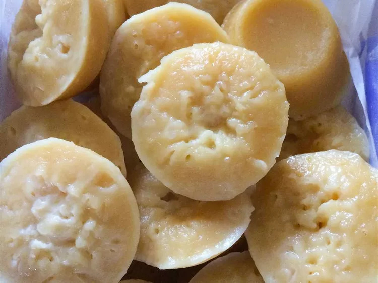

Puto

Description
Puto is a Filipino steamed rice cake, traditionally made from slightly fermented rice dough (galapong).
It is eaten as is or as an accompaniment to a number of savoury dishes (most notably, dinuguan).
Ingredients
- 4 cups all-purpose flour
- 2 cups white sugar
- 1 tablespoon baking powder
- 6 eggs
- 1 (12 fluid ounce) can evaporated milk
- 1 ½ cups water
- 2 ¼ cups Edam cheese, shredded
Steps
- Grease small cake molds or ramekins that will fit in a steamer basket.
- Mix flour, sugar, and baking powder together in a bowl. In a separate large bowl, scramble eggs with
evaporated milk and water. Fold dry mixture into eggs until evenly blended.
Fill the prepared molds 2/3 of the way up with batter and top with shredded cheese.
- Fill a wok or a saucepan that will hold a steamer basket with a few inches of water.
Bring water to a boil over medium-high heat. Place the molds into a steamer basket, place over boiling water, and cover.
- Steam until a toothpick inserted in the center of one of the putos comes out clean, about 30 minutes.
Cool on a wire rack and serve warm or at room temperature.